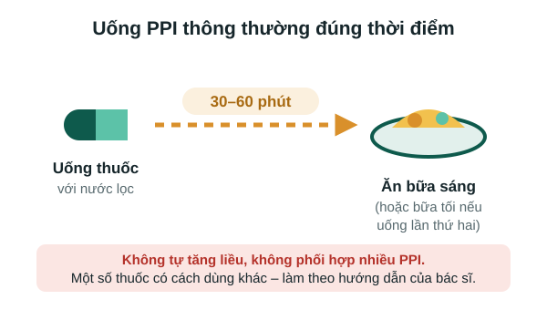
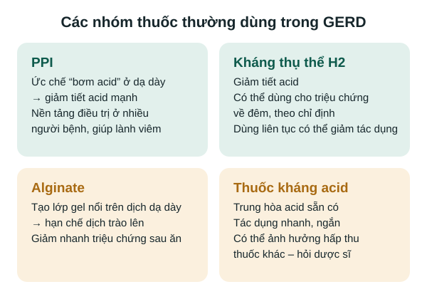

Thuốc điều trị GERD được lựa chọn dựa trên mức độ triệu chứng, kết quả nội soi, bệnh lý đi kèm và đáp ứng trước đó. Thuốc ức chế bơm proton (PPI) là nền tảng điều trị ở nhiều người bệnh, đặc biệt khi có viêm thực quản. Tuy nhiên, không phải trường hợp ợ nóng nào cũng cần dùng PPI kéo dài.
Đọc thêm: GERD là gì và cách nhận biết · chế độ ăn cho người bị trào ngược dạ dày – thực quản
1. Thuốc ức chế bơm proton (PPI)
PPI làm giảm tiết acid bằng cách ức chế bơm proton ở tế bào thành dạ dày. Nhờ giảm acid, thuốc giúp giảm triệu chứng và tạo điều kiện cho tổn thương viêm thực quản lành lại.

Các thuốc thường gặp gồm omeprazole, esomeprazole, pantoprazole, lansoprazole và rabeprazole. Liều chuẩn tham khảo trong Hướng dẫn Hội Khoa học Tiêu hóa Việt Nam 2025 gồm omeprazole 20 mg, pantoprazole 40 mg, lansoprazole 30 mg, esomeprazole 40 mg và rabeprazole 20 mg mỗi ngày. Liều cụ thể cần được bác sĩ lựa chọn theo chỉ định, chế phẩm và tình trạng người bệnh.
Với đa số PPI dạng thông thường, nên uống trước bữa ăn 30–60 phút; nếu dùng hai lần mỗi ngày, thường uống trước bữa sáng và bữa tối. Dexlansoprazole có đặc điểm dùng không phụ thuộc bữa ăn. Không tự ý tăng liều hoặc phối hợp nhiều PPI.
2. Alginate và thuốc kháng acid
Alginate tạo lớp gel nổi trên bề mặt dịch dạ dày, góp phần hạn chế dịch trào ngược lên thực quản. Thuốc kháng acid trung hòa acid đã có trong dạ dày. Hai nhóm này có thể giúp giảm nhanh triệu chứng sau ăn hoặc triệu chứng nhẹ, nhưng không thay thế đánh giá y khoa khi bệnh dai dẳng hoặc có biến chứng.

Cần đọc hướng dẫn sử dụng, lưu ý hàm lượng natri và thận trọng ở người có bệnh thận, suy tim hoặc cần hạn chế muối. Một số thuốc kháng acid có thể ảnh hưởng hấp thu thuốc khác nên cần hỏi dược sĩ/bác sĩ về khoảng cách dùng.
3. Thuốc kháng thụ thể H2
Famotidine là ví dụ của nhóm kháng thụ thể H2, giúp giảm tiết acid. Thuốc có thể được cân nhắc trong một số trường hợp, chẳng hạn triệu chứng về đêm hoặc khi PPI không phù hợp. Dùng liên tục có thể xuất hiện hiện tượng giảm đáp ứng (dung nạp). Người suy thận có thể cần điều chỉnh liều.
4. Thuốc hỗ trợ vận động và các thuốc khác
Thuốc tăng nhu động không được khuyến cáo dùng thường quy cho mọi người bệnh GERD. Chỉ cân nhắc khi có bằng chứng hoặc nghi ngờ phù hợp, ví dụ chậm làm rỗng dạ dày, và cần cân nhắc tác dụng phụ. Baclofen có thể giảm một số đợt trào ngược ở bệnh nhân được lựa chọn, nhưng có thể gây buồn ngủ, chóng mặt và các tác dụng không mong muốn khác. Không nên tự dùng các thuốc này.
Hướng dẫn Việt Nam 2025 đề cập có thể cân nhắc P-CAB (thuốc ức chế acid cạnh tranh kali) trong một số trường hợp. Việc lựa chọn phụ thuộc thuốc được cấp phép, khả năng tiếp cận và đánh giá của bác sĩ.
5. Dùng PPI bao lâu?
Thời gian điều trị phụ thuộc thể bệnh. Người có viêm thực quản thường được điều trị PPI liều chuẩn khoảng 8 tuần để giảm triệu chứng và làm lành niêm mạc. Người có NERD có thể được điều trị thử 4–8 tuần. Sau khi kiểm soát triệu chứng, bác sĩ đánh giá khả năng giảm liều, dùng khi cần hoặc ngừng thuốc.
Người có viêm thực quản nặng độ LA C/D, biến chứng hoặc Barrett thực quản có thể cần điều trị duy trì lâu dài. Khi có chỉ định, lợi ích kiểm soát bệnh thường vượt trội nguy cơ tiềm tàng. Nên dùng liều thấp nhất có hiệu quả phù hợp với mục tiêu điều trị và tái đánh giá định kỳ.
6. Lưu ý về an toàn khi dùng thuốc
PPI nhìn chung được dung nạp tốt. Một số tác dụng phụ có thể gặp gồm đau đầu, đau bụng, buồn nôn, tiêu chảy hoặc táo bón. Các nghiên cứu quan sát từng ghi nhận mối liên quan giữa PPI dài hạn với một số biến cố sức khỏe, nhưng mối liên quan không đồng nghĩa quan hệ nhân quả. Không nên tự ngừng thuốc cần thiết chỉ vì lo ngại thông tin trên mạng.
Hãy thông báo với bác sĩ về tất cả thuốc đang dùng, đặc biệt thuốc chống đông, kháng kết tập tiểu cầu, thuốc điều trị HIV, methotrexate liều cao hoặc các thuốc có tương tác đáng kể. Không tự ý nghiền/mở viên nang hoặc thay đổi cách dùng nếu chưa kiểm tra hướng dẫn của chế phẩm.
7. Khi nào cần đánh giá lại?
Cần tái khám nếu triệu chứng không cải thiện sau khi dùng đúng thuốc và đúng thời điểm, nhanh chóng tái phát sau ngừng thuốc, hoặc xuất hiện nuốt nghẹn, nuốt đau, sụt cân, nôn kéo dài, thiếu máu, nôn máu hay phân đen. Bác sĩ có thể xem xét nội soi, đo pH – trở kháng hoặc đánh giá chẩn đoán khác thay vì chỉ tiếp tục tăng thuốc.
Đọc thêm: GERD kháng trị: vì sao uống thuốc mãi không khỏi · khi nào có thể cân nhắc phẫu thuật chống trào ngược
Câu hỏi thường gặp
PPI nên uống lúc nào?
Nhiều PPI dạng uống thông thường được dùng trước bữa ăn 30–60 phút; thời điểm cụ thể phụ thuộc loại thuốc và hướng dẫn kê đơn.
Uống PPI lâu dài có nguy hiểm không?
PPI có chỉ định và lợi ích rõ trong nhiều trường hợp. Việc dùng kéo dài cần được bác sĩ đánh giá định kỳ về chỉ định, liều và thời gian.
Có thể tự tăng gấp đôi liều PPI khi còn ợ nóng không?
Không nên tự tăng liều. Cần kiểm tra cách dùng, tuân thủ, chẩn đoán và nguyên nhân khác trước khi điều chỉnh điều trị.
Tài liệu tham khảo
Hội Khoa học Tiêu hóa Việt Nam. Hướng dẫn chẩn đoán và điều trị bệnh trào ngược dạ dày – thực quản. 2025; đặc biệt Khuyến cáo 13–18 và Bảng 5 về liều chuẩn PPI.
Katz PO, et al. ACG Clinical Guideline for the Diagnosis and Management of GERD. Am J Gastroenterol. 2022.
Yadlapati R, et al. AGA Clinical Practice Update on the Personalized Approach to the Evaluation and Management of GERD. 2022.
Lưu ý y khoa: Bài viết cung cấp thông tin giáo dục sức khỏe, không thay thế thăm khám, chẩn đoán hoặc điều trị cá nhân. Người đọc cần trao đổi với nhân viên y tế trước khi thay đổi thuốc hoặc kế hoạch điều trị.